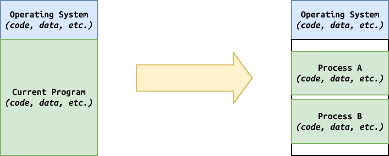
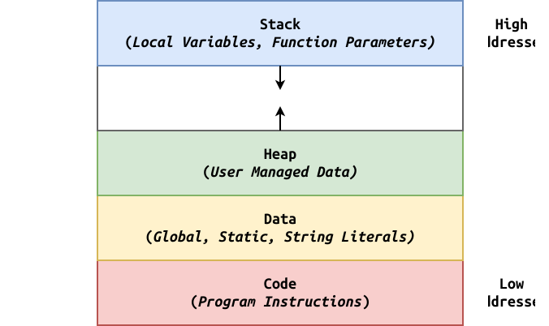

Logistics¶
-
Exam 02: Graded
-
Exam 02 - Redemption: Another opportunity to practice using threads.
- We live in multi-core world.
- Inspired by theprimeagen, Noah (Anthropic).
-
Is this task or data parallel?
data -
What concurrency pattern should you use?
rate-limiting
Reading 07: Due today but will allow late submission due to Fall Break.
Project 01: Graded, finally. Make sure to check for errors.
Project 02: Will be graded soon, probably, hopefully.
Project 03: Implementing...
malloc... out soon, probably.-
Challenge: Can't use
printfsince it usesmallocinternally. -
Real Life Story: Emory Michaels implemented a custom
mallocwhile working at a startup (Lucata).
Review: OS Themes¶
-
Virtualization: Processes (CPU), Threads (Execution Context)
-
Concurrency: Synchronization (race conditions, deadlock, mutex, cond var, semaphore)
-
Persistence: File System
Virtual Memory: Motivation¶
Analogy: Dorm Room (take your stuff -> need protection).

With the development of multi-programming and time-sharing, we needed a way to protect programs from each other and to effectively switch between them.Virtual Memory: Address Space¶
The operating system provides each process an abstraction of memory called the address space.

Demo 1: addresses.c
- Jumps (name of function is address)
- Relative addresses (stack is high, code is low)
- Loader (adjusts memory addresses)
- ASLR (address space layout randomization)
Demo 2:
- Modify
Globaland addsleep(10)and run two concurrently.
Virtual Memory: Challenges¶
-
Protection: Prevent one process from interfering with another.
-
Ownership: Each process believes it has sole control of all of memory (and infinite memory).
Address Translation: Overview¶
Each address in our program is actually a virtual address that must be translated to a physical address.
This virtualization allows us to relocate a process to any location in memory.
Goals¶
-
Transparency
Invisible to application.
-
Efficiency
As little overhead as possible.
-
Protection
Must isolate programs from each other.
Address Translation: Relocation¶
Static¶
One way to achieve this relocation is to modify your application whenever you need to load it into memory.
-
No protection
-
Difficult to relocate
-
Expensive upfront costs
Dynamic¶
A better approach is to use special hardware (mmu) features to perform on-demand translation.
-
Can provide protection
-
Can be updated
-
Pay cost as you go
Indirection: Add middle-man/translation layer to provide protection and flexibility (base and bounds, segmentation, paging).
Address Translation: Base & Bounds¶
One simple method of hardware-based address translation is the base and bounds method:
-
The CPU has a base register which holds the starting point in physical memory, and a bounds register which holds the ending point in physical memory.
-
The physical address can be translated by computing the following:
Physical Address = Base + Virtual AddressTrue/False: The OS has one set of base & bounds?
False, one per process. Must save and restore on each context switch.Address Translation: Example¶
Suppose we had an address space of
8KBthat has been loaded at physical address32KB:- K = 2^10 = 1024
- M = 2^20 = Million
- G = 2^30 = Billion
- T = 2^40 = Trillion
Virtual Address Physical Address 0 KB 32 KB 1 KB 33 KB 5000 37768 9000 Fault (Out of Bounds) - Pros: relocation, some protection.
-
On out of bounds, a fault is generated by the MMU, which is captured by the CPU, who then consults the trap table and then runs the handler in the OS, which then sends a
SIGSEGVto the offending process. -
Cons: empty space between heap and stack (internal fragmentation), hard to grow bounds (external fragmentation).
Memory API: Trivia¶
Allocation¶
How do we allocate an array of
1,000,000ints?int *a = malloc(1000000 * sizeof(int));Deallocation¶
How do we deallocate that array of ints?
free(a);Common Error A¶
What is the memory error in the following code?
char *buffer; fgets(buffer, BUFSIZ, stdin);Forgot to allocate memory, so we segfault.Common Error B¶
What is the memory error in the following code?
char *src = "Smile like you mean it"; char *dst = malloc(strlen(src)); strcpy(dst, src);Did not allocate enough memory, so buffer overflow.Common Error C¶
What is the memory error in the following code?
char *s = malloc(100*sizeof(char)); puts(s);Did not initialize memory, so uninitialized read.Common Error D¶
What is the memory error in the following code?
for (int i = 1; i < argc; i++) { char *s = strdup(argv[i]); process(s); }Forgot to free memory, so memory leak.Common Error E¶
What is the memory error in the following code?
for (int i = 1; i < argc; i++) { char *s = strdup(argv[i]); process(s); free(s); puts(s); }Freed before we are done, so dangling pointer.What is the memory error in the following code?
for (int i = 1; i < argc; i++) { char *s = strdup(argv[i]); process(s); free(s); puts(s); }Freed before we are done, so dangling pointer.Common Error F¶
What is the memory error in the following code?
for (int i = 1; i < argc; i++) { char *s = strdup(argv[i]); if (check(s)) { free (s); } free(s); }Try to free something more than once, so double free.Common Error G¶
What is the memory error in the following code?
for (int i = 1; i < argc; i++) { char *s = argv[i]; process(s); free(s); }Try to free something that wasn't dynamically allocated, so invalid free.Where is My Mind?¶
Dr. Thain wants you to write a compiler. He tells you don't worry about managing memory, just allocate as much as you want and don't bother to free anything. You look at him in horror and are ready to roast him on Slack / X. Are you justified?
We have two levels of memory management:
at the OS level, and at the process level. When a process exits, all of its memory is returned
to the OS even if it was not freed by the process.